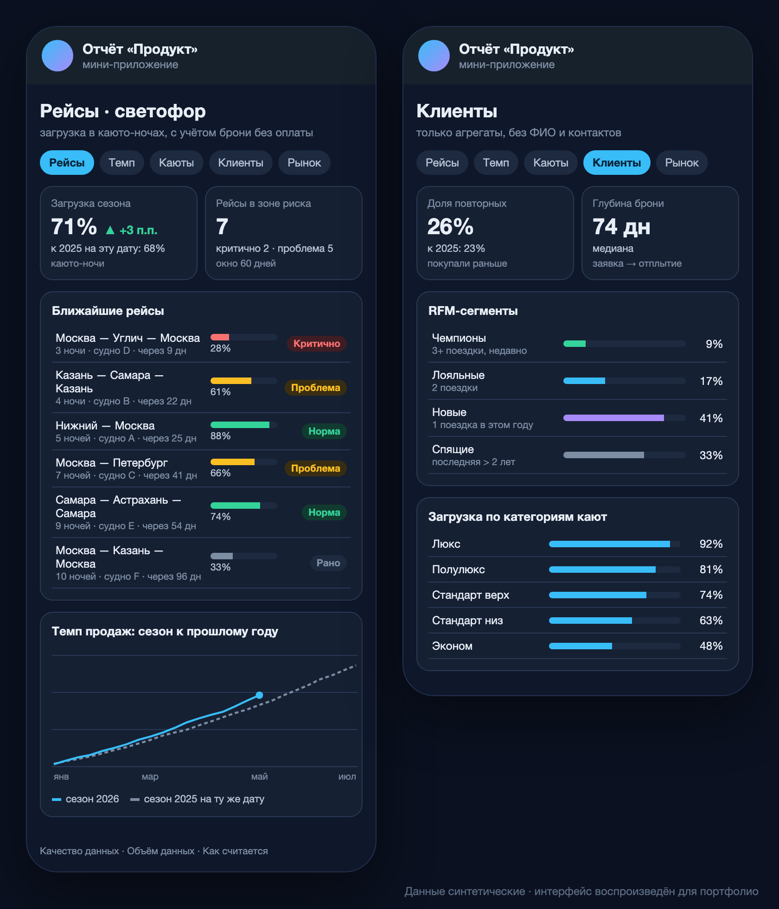

Загрузка…
intstage
Александр Чернецов
Аналитик данных · продуктовая аналитика · BI
Санкт-Петербург, удалённо
- 8+
- лет в B2B и IT-проектах
- 557
- часов практики в Яндекс Практикуме
- 13
- кейсов в портфолио
Обо мне
8+ лет в B2B-продажах и управлении IT-проектами, затем осознанный переход в аналитику данных.
Сейчас — аналитик в B2C-туризме: продуктовая аналитика (загрузка, темп продаж год к году, RFM, конкуренты), сквозная аналитика, NPS, поддержка решений.
Чтобы цифры работали, нужно отлично понимать бизнес изнутри. Я не просто строю графики — я решаю бизнес-задачи.
Отчёт прямо в Telegram
Так выглядит продуктовый отчёт в Mini App: светофор рейсов, темп продаж, клиенты. Данные синтетические.
Кейс: Продуктовая аналитика рейсовИзбранные кейсы
Все 13- Google Apps Script
- Bitrix24 REST API
- Яндекс Метрика API
- REST API

Продуктовая аналитика рейсов Загрузка, светофор рейсов, YoY, RFM, конкуренты- SQL
- Superset
- Google Apps Script
- Node.js
- Google Apps Script
- Яндекс Метрика API
- SQL
- Superset
Стек
BI и визуализация
- Yandex DataLens
- Apache Superset
- Power BI
- Looker Studio
Данные
- SQL
- ClickHouse
- PySpark
- Python
- Pandas
- NumPy
Автоматизация
- Apps Script
- n8n
- Make
- Airflow
- REST API
- Telegram Mini Apps
CRM и маркетинг
- Bitrix24
- Mindbox
- Яндекс Метрика
- Kaiten
Образование и статусы
- Яндекс ПрактикумАналитик данных, расширенный курс — 557 часов практики
- Партнёр 1С-БитриксБизнес-партнёр по «1С-Битрикс24» и «1С-Битрикс: Управление сайтом»
- Академия «Пять призм»Коучинг международного уровня
«Аналитические дашборды отличались структурированностью и были востребованы при принятии управленческих решений»